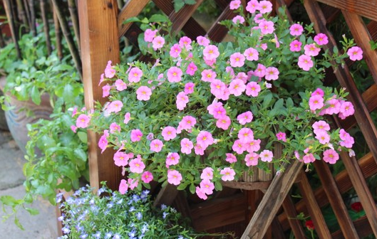

not p html
sgfjsddu
hello world
The strongly emphasized word in this paragraph isred.
This subhead is also red.
The strongly emphasized word in this subhead isblue.
helloworld
This heading will be center-aligned
This paragraph will also be center-aligned.
hello helln,welcome to here!
设置透明的背景
设置背景图片，默认图片是重复的
设置背景图片是否重复:h4标签添加background-repeat:inherit属性的话，会继承父元素div的样式，H4的背景图会变为div的背景图，去掉background-repeat:inherit的话就不会这样了
背景图片的位置 background-position:center
背景图片的位置 background-position:bottom
背景图片的位置 background-position:top
